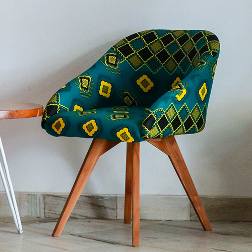
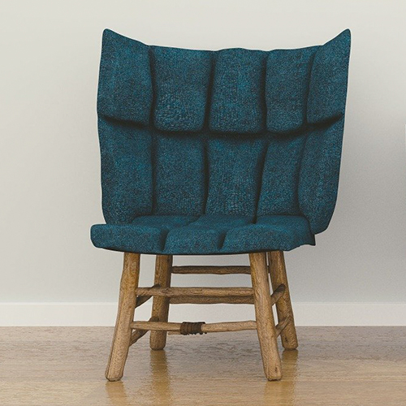
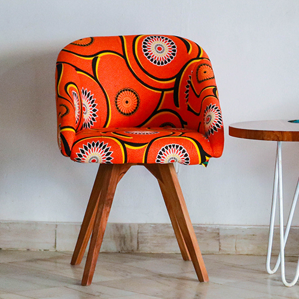
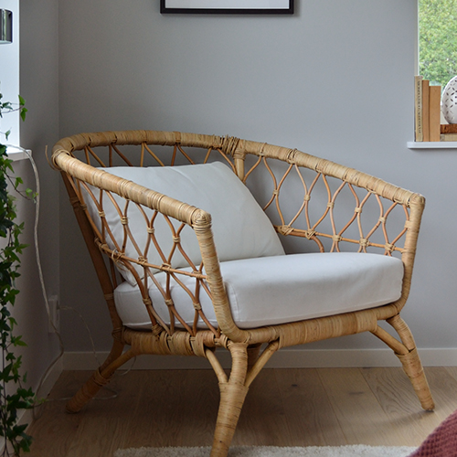

Products
   About
Sit Conmigo's mission is to create chairs that are trendy, stylish, and best of all, comfy! Every Sit Conmigo chair is made only with sustainable, fair-trade materials. We're also commited to promoting fair labour practices that ensure our employees have safe working conditions and are paid fairly for their skills. The result is a chair that you'll not only love in your home or office but a chair that was lovingly made by the person building it.